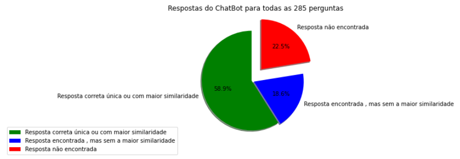
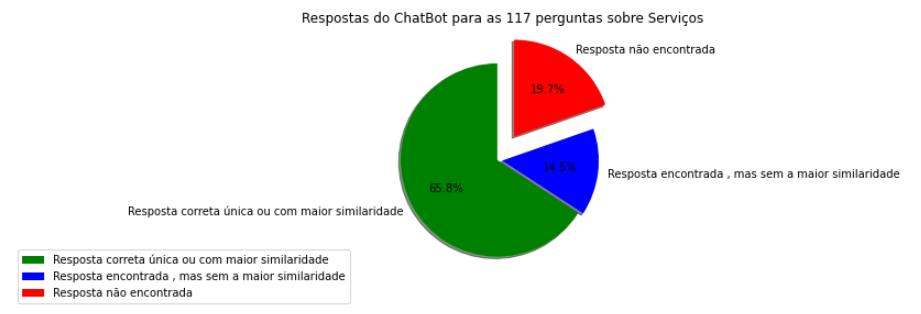
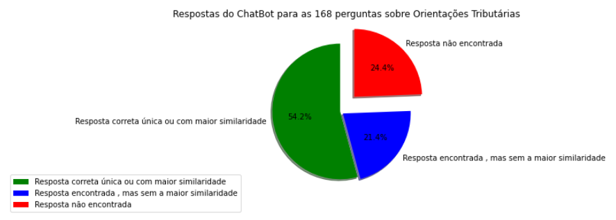

Análise e Resultados
Análise e Resultados
notebook jupyter: 05_analise_dados.ypnb:
Gerando as estatísticas da iteração entre o chatbot e os usuários
Feito a partir do arquivo de log gravado pelo app web
importando as bibliotecas
#importando as bibliotecas
import pandas as pd
import os
Processando o arquivo de log para gerar os dados que serão gravados em uma planilha, a partir de onde será feita a estatística
# inicializando as variáveis
ct_resp = 0 #conta o total de perguntas/resposta
nper = [] # guarda o número da pergunta
nseq = [] #guarda o sequencial da resposta para aquela pergunta. Obs.: sequencial zero é a própria pergunta
#para cada resposta encontrada o sequencial é incrementado de 1
per_resp = [] # texto da pergunta ou da resposta
lnks = [] #links das respostas encontradas
ind_sim = [] # indíce de similaridade das respostas encontradas
tipo = [] # 'srv' para serviço, 'ori' para Orientação Tributária e 'pes' para a pesquisa no site da RFB via google
arquivo = "./log.txt" # nome do arquivo onde foram gravados os logs
#abre o arquivo de log e lê as linhas/registros
with open(arquivo, "r", encoding="utf-8") as file:
linhas = file.readlines()
# loop para processar cada linha do arquivo de log
for reg in linhas:
part1 = reg.split("#") # separa os campos com as informações gravadas
if reg[3:4] == ":" or reg[4:8] == "#msg": #desprezar perguntas e respostas de conversas comuns
pass
else:
if len(part1[1])== 6: # é pergunta sobre serviço ou orientação
ct_resp = 0 #zera o nr. da resposta
num_per = part1[1] # número da pergunta
if part1[4] == "pes": # é pesquisa
txt = "p:" + part1[5][0:].strip()
elif part1[4] == "srv": # é serviço
part2 = part1[3].split("|")
txt = "s:" + part1[5][1:].strip()
elif part1[4] == "ori": # é serviço
part2 = part1[3].split("|")
txt = "o:" + part1[5][1:].strip()
else: #log gravado com erro
txt ="erro.."
# acrescenta os dados lidos das perguntas nas variáveis listas
nper.append(num_per)
nseq.append(ct_resp)
per_resp.append(txt)
lnks.append("*")
ind_sim.append(0)
tipo.append(part1[4])
print(part1[1],ct_resp, txt)
else: # é resposta
if part1[2] == "srv": # é pesquisa
part2 = part1[3].split("|")
serv = part2[0][8:].strip()
lnk = part2[2][5:].strip()
sim = part2[1][13:].strip()
elif part1[2] == "ori": # é serviço
part2 = part1[3].split("|")
serv = part2[0][8:].strip()
lnk = part2[1][5:].strip()
sim = part2[2][13:].strip()
else: #
serv ="*"
lnk = "*"
sim = "0.00"
# acrescenta os dados lidos das respostas nas variáveis listas
ct_resp = ct_resp + 1 # incrementa o número da resposta
per = num_per
nper.append(per)
nseq.append(ct_resp)
per_resp.append(serv)
lnks.append(lnk)
ind_sim.append(sim)
tipo.append(part1[2])
print(seq, ct_resp, serv,lnk, sim)
#
# cria o dataframe base para o banco de respostase e grava em uma planilha
df1 = pd.DataFrame({'NumPer': nper, 'NumSeq': nseq , 'PerResp': per_resp,'Link': lnks,'Similaridade': ind_sim, 'Tipo': tipo})
#
df1.to_excel('./DadosParaAnalisar.xlsx', index = False)
#
Tratamento manual da planilha gravada com os dados extraídos dos logs
Neste estágio tem que ser feito um tratamento manual da planilha gerada pelo código, de modo a consolidar os dados em uma outra planilha
- Faz-se uma cópia do arquivo "DadosParaAnalisar.xlsx" para uma planilha com o nome "DadosConsolidados.xlsx"
-
Edita-se manualmente a planilha para verificar se foi encontrada a respostas correta para a pergunta, editando-se a linha com a pergunta (campo NumSeq = 0) da seguinte forma:
- elimina-se linhas com perguntas descabidas, fora do contexto que o chatbot pode responder
- verifica se foi encontrado um link com pelo menos uma resposta válida
- se foi procura pela busca do google mantém o registro como está , sem nenhuma alteração
-
se foi pergunta sobre serviço ou orientação tributária:
- Se a primeira resposta encontrada foi a correta, atribui=se o valor "1" ao campo da planilha "ok" e coloca-se o valor da similaridade encontrada para esta pergunta;
- Se encontrou mais de uma resposta para a mesma pergunta, coloca-se o valor de similaridade encontrado igual a
resposta correta ou mais correta para a pergunta:
- se a primeira resposta encontrada foi a mais correta, atribui=se o valor "1" ao campo da planilha "ok"
- se a resposta mais correta não foi a primeira encontrada (com maior similaridade), calcula-se o valor do campo "ok" da planilha sendo o quociente entre a similaridade da melhor resposta dividida pela similaridade da primeira resposta encontrada
- se não encontrou nenhuma resposta atribui-se o valor "0" aos campos "Similaridade"e e "ok" da planilha
-
Elimina-se as demais linhas relativas a cada pergunta (NumSeq diferente de "0")
Código para fazer a estatística da eficácia do chatbot, a partir dos dados consolidados manualmente na planilha "DadosConsolidados.xlsx"
#inicializa variáveis
ct_per = 0 # numero de perguntas
resp_ok_srv = 0 # conta respostas ok, com única resposta correta ou a primeira encontrada correta (para serviço)
sim_resp_ok_srv = 0 # soma da similaridade de todas as respostas ok (para serviço)
resp_nao_ok_srv = 0 # número de respostas não ok, ou seja, pergunta sem resposta encontrada (para serviço)
resp_aceite_srv = 0 # número de perguntas com respostas razoáveis, encontrou uma resposta mas não foi a primeira encontrada (para serviço)
sim_resp_aceite_srv = 0 # soma dos % dos quocientes entre as similaridades da resposta correta pela de maior similaridade(campo "ok)") (para serviço)
resp_ok_ori = 0 # conta respostas ok, com única resposta correta ou a primeira encontrada correta (ori. tributária)
sim_resp_ok_ori = 0 # soma da similaridade de todas as respostas ok (ori. tributária)
resp_nao_ok_ori = 0 # número de respostas não ok, ou seja, pergunta sem resposta encontrada (ori. tributária)
resp_aceite_ori = 0 # número de perguntas com respostas razoáveis, encontrou uma resposta mas não foi a primeira encontrada (ori. tributária)
sim_resp_aceite_ori = 0 # soma dos % dos quocientes entre as similaridades da resposta correta pela de maior similaridade(campo "ok)") (ori. tributária)
ct_busca = 0 # contador das pesquisas do google que os usuários pediram, desprezando a resposta do bot
erros = 0
#
# abre a planilha consolidada e armazena os dados no dataframe
df1 = pd.read_excel('./DadosConsolidados.xlsx')
#
#
# loop sobre o dataframe para fazer a estatística
for i in range(len(df1)):
ct_per = ct_per + 1
if df1.iloc[i][5] == "pes": # pesquisa do motor google no site da RFB
ct_busca = ct_busca + 1
elif df1.iloc[i][5] == "srv": #resposta sobre serviço
if df1.iloc[i][6] == 0: # não encontrou resposta
resp_nao_ok_srv = resp_nao_ok_srv + 1 # adiciona 1 ao contador
elif df1.iloc[i][6] < 1: # resposta aceitável, mas não foi a primeira encontrada (com maior similaridade)
resp_aceite_srv = resp_aceite_srv + 1 # adiciona 1 ao contador
sim_resp_aceite_srv = sim_resp_aceite_srv + df1.iloc[i][6] # acumula o valor da similaridade
elif df1.iloc[i][6] == 1: # resposta encontrada ok,ou seja, única ou foi a primeira encontrada (com maior similaridade)
resp_ok_srv = resp_ok_srv + 1 # adiciona 1 ao contador
sim_resp_ok_srv = sim_resp_ok_srv + df1.iloc[i][4] # acumula o valor da similaridade
else: # resposta inválida (não se enquadra nos casos anteriores)
print("erro!!", df1.iloc[i][0])
erros = erros + 1
elif df1.iloc[i][5] == "ori": #resposta sobre orientacao tributária
if df1.iloc[i][6] == 0: # não encontrou resposta
resp_nao_ok_ori = resp_nao_ok_ori + 1 # adiciona 1 ao contador
elif df1.iloc[i][6] < 1: # resposta aceitável, mas não foi a primeira encontrada (com maior similaridade)
resp_aceite_ori = resp_aceite_ori + 1 # adiciona 1 ao contador
sim_resp_aceite_ori = sim_resp_aceite_ori + df1.iloc[i][6] # acumula o valor da similaridade
elif df1.iloc[i][6] == 1: # resposta encontrada ok,ou seja, única ou foi a primeira encontrada (com maior similaridade)
resp_ok_ori = resp_ok_ori + 1 # adiciona 1 ao contador
sim_resp_ok_ori = sim_resp_ok_ori + df1.iloc[i][4] # acumula o valor da similaridade
else: #resposta inválida (não se enquadra nos casos anteriores)
print("erro!!", df1.iloc[i][0])
erros = erros + 1
else: #pergunta inválida , não é serviço , nem orientação , nem pesquisa
print("pergunta invalida!!", df1.iloc[i][0])
#
#
# calcula totais
tot = resp_nao_ok_srv + resp_aceite_srv + resp_ok_srv + resp_nao_ok_ori + resp_aceite_ori + resp_ok_ori
resp_nao_ok = resp_nao_ok_srv + resp_nao_ok_ori
resp_aceite = resp_aceite_srv + resp_aceite_ori
resp_ok = resp_ok_srv + resp_ok_ori
print("Total de perguntas/respostas válidas", tot)
#
Código para plotar os gráficos com a estatística dos resultados/respostas do ChatBot
Gráfico considerando todas as perguntas feitas ao ChatBot
#
# plota gráfico com estatística das respostas para todas as perguntas
# importa as bibliotecas
import matplotlib.pyplot as plt
import numpy as np
respostas = [resp_ok, resp_aceite, resp_nao_ok]
rotulos = ['Resposta correta única ou com maior similaridade', 'Resposta encontrada , mas sem a maior similaridade', 'Resposta não encontrada']
cores=['green', 'blue', 'red']
# o atributo explode indica que fatia do gráfico será destacada. No exemplo abaixo, será a primeira fatia. A quantidade de valores é igual ao número de fatias do gráfico.
explode = (0, 0.05, 0.3) # explode 1st slice
# Atribuindo um título ao gráfico
titulo = "Respostas do ChatBot para todas as " + str(tot) + " perguntas"
plt.title(titulo)
plt.pie(respostas, explode=explode, labels=rotulos, colors=cores, autopct='%1.1f%%', shadow=True, startangle=90)
#Adiciona Legenda
plt.legend(rotulos, bbox_to_anchor=(0.1, 0.1),loc='upper right')
#Centraliza o gráfico
plt.axis('equal')
# exibe/plota o gráfico
plt.show()
#

Gráfico considerando somente as perguntas feitas sobre os Serviços
# plota gráfico com estatística das respostas para as perguntas sobre Serviços
rotulos = ['Resposta correta única ou com maior similaridade', 'Resposta encontrada , mas sem a maior similaridade', 'Resposta não encontrada']
respostas = [resp_ok_srv, resp_aceite_srv, resp_nao_ok_srv]
#
cores=['green', 'blue', 'red']
# o atributo explode indica que fatia do gráfico será destacada. No exemplo abaixo, será a primeira fatia. A quantidade de valores é igual ao número de fatias do gráfico.
explode = (0, 0.05, 0.3) # explode 1st slice
# Atribuindo um título ao gráfico
tot_resp_srv = resp_ok_srv + resp_aceite_srv + resp_nao_ok_srv
titulo = "Respostas do ChatBot para as " + str(tot_resp_srv) + " perguntas sobre Serviços"
plt.title(titulo)
plt.pie(respostas, explode=explode, labels=rotulos, colors=cores, autopct='%1.1f%%', shadow=True, startangle=90)
#Adiciona Legenda
plt.legend(rotulos, bbox_to_anchor=(0.1, 0.1),loc='upper right')
#Centraliza o gráfico
plt.axis('equal')
# exibe/plota o gráfico
plt.show()
#

Gráfico considerando somente as perguntas feitas sobre as Orientações Tributárias
# plota gráfico com estatística das respostas para as perguntas sobre Orientações Tributárias
rotulos = ['Resposta correta única ou com maior similaridade', 'Resposta encontrada , mas sem a maior similaridade', 'Resposta não encontrada']
respostas = [resp_ok_ori, resp_aceite_ori, resp_nao_ok_ori]
#
cores=['green', 'blue', 'red']
# o atributo explode indica que fatia do gráfico será destacada. No exemplo abaixo, será a primeira fatia. A quantidade de valores é igual ao número de fatias do gráfico.
explode = (0, 0.05, 0.3) # explode 1st slice
# Atribuindo um título ao gráfico
tot_resp_ori = resp_ok_ori + resp_aceite_ori + resp_nao_ok_ori
titulo = "Respostas do ChatBot para as " + str(tot_resp_ori) + " perguntas sobre Orientações Tributárias"
plt.title(titulo)
plt.pie(respostas, explode=explode, labels=rotulos, colors=cores, autopct='%1.1f%%', shadow=True, startangle=90)
#Adiciona Legenda
plt.legend(rotulos, bbox_to_anchor=(0.1, 0.1),loc='upper right')
#Centraliza o gráfico
plt.axis('equal')
# exibe/plota o gráfico
plt.show()
#
